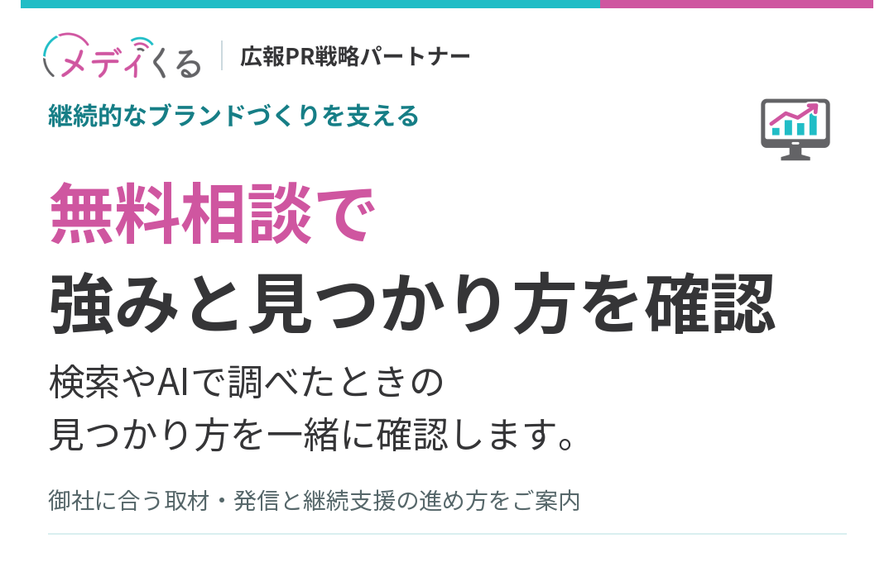

設定済みのLINE案内
A反映済み・テスト送信なし管理画面で保存・再表示を確認した内容を並べています。テスト送信は行っていません。
リッチメニュー

無料相談のA案に合わせたメニューです。
継続支援の案内画像

継続支援の短い本文
約2分半の紹介動画を見る無料相談の申込みへ
ボタン部分は表示見本です。
登録直後の案内
約2分半の紹介動画を見る
点数の提供や診断プレゼントを約束するB特典は保留です。
管理画面で保存・再表示を確認した内容を並べています。テスト送信は行っていません。
無料相談のA案に合わせたメニューです。

ボタン部分は表示見本です。
点数の提供や診断プレゼントを約束するB特典は保留です。